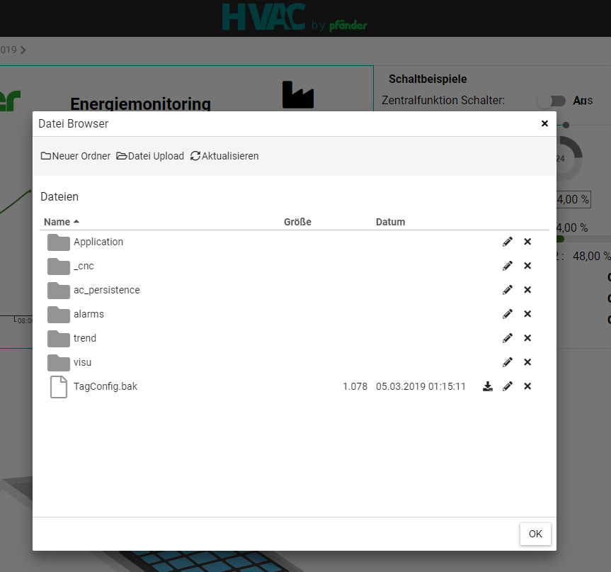

AutomationPortalConnector (FB)¶
FUNCTION_BLOCK AutomationPortalConnector
Short Description¶
Connects the controller to the HVAC Automation Portal. Further information at www.hvac-automation.comEnables the transfer of variables or the CODESYS symbol configuration.These can then be recorded and evaluated in the portal.In addition, alarms can be forwarded, CODESYS Visu can be accessed and the device directory can be accessed.In the HVAC RB300 library, a function block for establishing a VPN connection from the portal to the controller can be placed especially for the RB300 controller.
Portrayal¶

Functional Description¶
To connect, please pass through the following points:
Transfer variables:¶
Step 1: Visit https://portal.hvac-automation.com and register for freeStep 2: Append the generated project ID to the Input diProjectId. Set xEn to TRUE.Step 3: Assign password at the input sPasswordStep 4: Right click on “Application” and “Symbol Configuration”. Check the variables which are to be transferred to the portal.Step 5: Download the application to the controllerStep 6: In the HVAC Automation Portal, the controller now appears orange, the password you created yourself must be entered here. There you go.
Visualization transfer:¶
To transfer the visualization, you must enter the visualization which have to be transferred at the sLocalVisuUrl input. If the local CODESYS visualization is to be transferred, it is sufficient to enter ‘http://127.0.0.1‘ or ‘http://127.0.0.1:8080/webvisu.htm‘. In the HVAC Automaion portal, the visualization can then be cleaved and used like a variable.

Transfer device directory:¶
The device’s folder structure can be accessed via the HVAC Automation Portal, e.g. to back up files remotely. To do this, enter ‘/’ for the complete root directory or ‘./’ for the CODESYS PLC directory at the sBrowsePath input.

- InOut:
Scope Name Type Initial Comment Input xEn BOOL diProjectId DINT -1 Project ID generated by hvac-automation portal: Open the project settings at the top right of the hvac-automation Portal sPassword STRING Password for secure Adapter communication: The password must be entered in hvac-automation Portal once the connection has been established sStorageDirectory STRING Optional - Speficy directory path, where to store configuration backup and logged value data. Use empty string for default directory tLiveValueInterval TIME TIME#1s0ms Optional - Specify higher interval to reduce networking load (Minimum: T#1s) sLocalVisuUrl STRING(200) ‘http://127.0.0.1‘ Optional - Specify URL(s) for pass-through to the server, to display local websites in hvac-automation Portal (e.g. http://localhost/visu). Multiple URLs can be separated with a semicolon. Limitations: No https support sBrowsePath STRING Optional - Specify path for reading and writing files from hvac-automation (e.g. ‘/’ for root directory or ‘./’ for CODESYS home directory). Leave empty to disable this functionality Output sStatus STRING(255) Description of current status/error xError BOOL TRUE if adapter is not working correctly (see Status output for details) xConnected BOOL TRUE if connection to hvac-automation portal is established